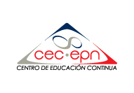

<ion-header [translucent]="true">
  <ion-toolbar>
    <ion-title>
      <h1>CURRICULUM</h1>
    </ion-title>
  </ion-toolbar>
</ion-header>

<ion-content [fullscreen]="true">
  <ion-header collapse="condense">
    <ion-toolbar>
      
    </ion-toolbar>
  </ion-header>

  <ion-grid>
    <h2>ESTUDIOS</h2>
  </ion-grid>

  <br>
  <div align="center">
    <h1>COLEGIO NACIONAL POLIVALENTE JUAN DE SALINAS</h1>
    <h2>Ciencia Exacta en Físico Matemático</h2>
    
  </div>
<br>
  <div align="center">
    <h1>ESCUELA POLITÉCNICA NACIONAL</h1>
    <h2>Tecnología en Análisis de Sistemas de Informaticos</h2>
    
  </div>
  <br>
  <div align="center">
    <h1>CENTRO DE EDUCACIÓN CONTINUA CEC</h1>
    <h2>Suficiencia en el idioma Inglés</h2>
    
  </div>
  

  